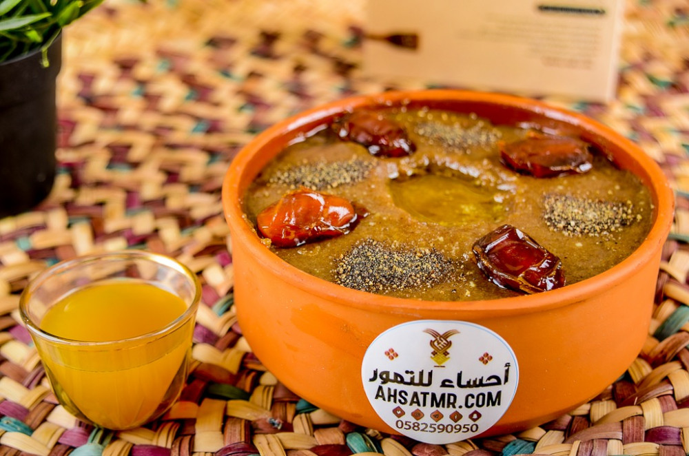

Aseeda
Ingredients
- A kilo of dates (preferably diabetic)
- 2 liters of water
- 4 and a half cups of brown flour
- ½ teaspoon salt
- ½ stick of butter
- pinch of black pepper
- pinch of saffron
- cardamom as desired
Recipe
- Put the dates in the blender with a little water and mix well until blended and homogeneous.
- Put the homogeneous date mixture in a saucepan on a low heat and add butter and brown flour to it until it reaches the boiling point, then beat the mixture with a hand mixer every ten minutes until it becomes firm and becomes like a dough.
- Add salt, saffron, black pepper and cardamom, mix well and serve hot.